Spatial data
Introduction to spatial statistics
Types of spatial analyses
In this class, we will discuss three types of spatial analyses: point pattern analysis, geostatistical models and models for areal data.
In point pattern analysis, we have point data representing the position of individuals or events in a study area and we assume that all individuals or events have been identified in that area. That analysis focuses on the distribution of the positions of the points themselves. Here are some typical questions for the analysis of point patterns:
Are the points randomly arranged or clustered?
Are two types of points arranged independently?
Geostatistical models represent the spatial distribution of continuous variables that are measured at certain sampling points. They assume that measurements of those variables at different points are correlated as a function of the distance between the points. Applications of geostatistical models include the smoothing of spatial data (e.g., producing a map of a variable over an entire region based on point measurements) and the prediction of those variables for non-sampled points.
Areal data are measurements taken not at points, but for regions of space represented by polygons (e.g. administrative divisions, grid cells). Models representing these types of data define a network linking each region to its neighbours and include correlations in the variable of interest between neighbouring regions.
Stationarity and isotropy
Several spatial analyses assume that the variables are stationary in space. As with stationarity in the time domain, this property means that summary statistics (mean, variance and correlations between measures of a variable) do not vary with translation in space. For example, the spatial correlation between two points may depend on the distance between them, but not on their absolute position.
In particular, there cannot be a large-scale trend (often called gradient in a spatial context), or this trend must be taken into account before modelling the spatial correlation of residuals.
In the case of point pattern analysis, stationarity (also called homogeneity) means that point density does not follow a large-scale trend.
In a isotropic statistical model, the spatial correlations between measurements at two points depend only on the distance between the points, not on the direction. In this case, the summary statistics do not change under a spatial rotation of the data.
Georeferenced data
Environmental studies increasingly use data from geospatial data sources, i.e. variables measured over a large part of the globe (e.g. climate, remote sensing). The processing of these data requires concepts related to Geographic Information Systems (GIS), which are not covered in this workshop, where we focus on the statistical aspects of spatially varying data.
The use of geospatial data does not necessarily mean that spatial statistics are required. For example, we will often extract values of geographic variables at study points to explain a biological response observed in the field. In this case, the use of spatial statistics is only necessary when there is a spatial correlation in the residuals, after controlling for the effect of the predictors.
Point pattern analysis
Point pattern and point process
A point pattern describes the spatial position (most often in 2D) of individuals or events, represented by points, in a given study area, often called the observation “window”.
It is assumed that each point has a negligible spatial extent relative to the distances between the points. More complex methods exist to deal with spatial patterns of objects that have a non-negligible width, but this topic is beyond the scope of this course.
A point process is a statistical model that can be used to simulate point patterns or explain an observed point pattern.
Complete spatial randomness
Complete spatial randomness (CSR) is one of the simplest point patterns, which serves as a null model for evaluating the characteristics of real point patterns. In this pattern, the presence of a point at a given position is independent of the presence of points in a neighbourhood.
The process creating this pattern is a homogeneous Poisson process. According to this model, the number of points in any area \(A\) follows a Poisson distribution: \(N(A) \sim \text{Pois}(\lambda A)\), where \(\lambda\) is the intensity of the process (i.e. the density of points per unit area). \(N\) is independent between two disjoint regions, no matter how those regions are defined.
In the graph below, only the pattern on the right is completely random. The pattern on the left shows point aggregation (higher probability of observing a point close to another point), while the pattern in the center shows repulsion (low probability of observing a point very close to another).
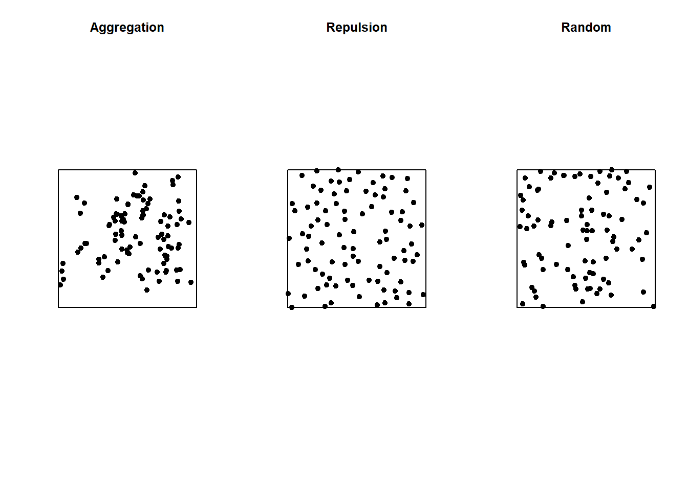
Ripley’s K function
Ripley’s K function is one of the summary statistics that we can use to compare a point pattern to a null hypothesis like CSR.
This function is calculated for different distances \(r\). For a given distance \(r\), \(K(r)\) measures the mean number of points \(N(r)\) in a disk of radius \(r\) drawn around a point in the pattern, normalized by the intensity \(\lambda\).
Under CSR, the mean of \(N(r)\) is \(\lambda \pi r^2\), thus in theory \(K(r) = \pi r^2\). A higher value of \(K(r)\) for a given pattern means that there is aggregation of points in this radius, while a lower value means that there is repulsion.
To test whether a pattern is compatible with the null hypothesis of CSR, we can generate random patterns of the same intensity as the observed one, then calculate \(K(r)\) for each simulation to create an envelope of values (e.g. containing 95% of the simulations) beyond which the null hypothesis will be rejected.
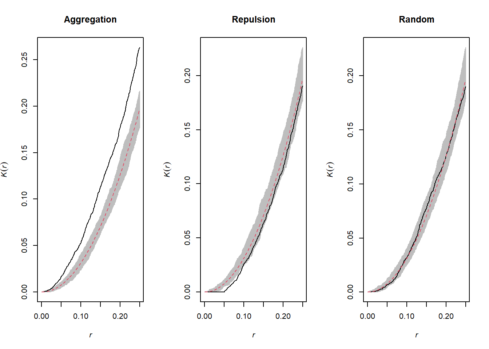
The graphs above show the value of \(K(r)\) for the patterns shown above for values of \(r\) up to 1/4 of the window width. The red dotted curve shows the theoretical value for a random pattern and the gray area is the envelope produced by 99 simulations. The aggregated pattern shows an excess of neighbours up to \(r = 0.25\) and the pattern with repulsion shows a significant deficit of neighbours for small values of \(r\).
Effect of heterogeneity
The graph below illustrates a heterogeneous point pattern, i.e. it shows an intensity gradient (more dots on the left than on the right).
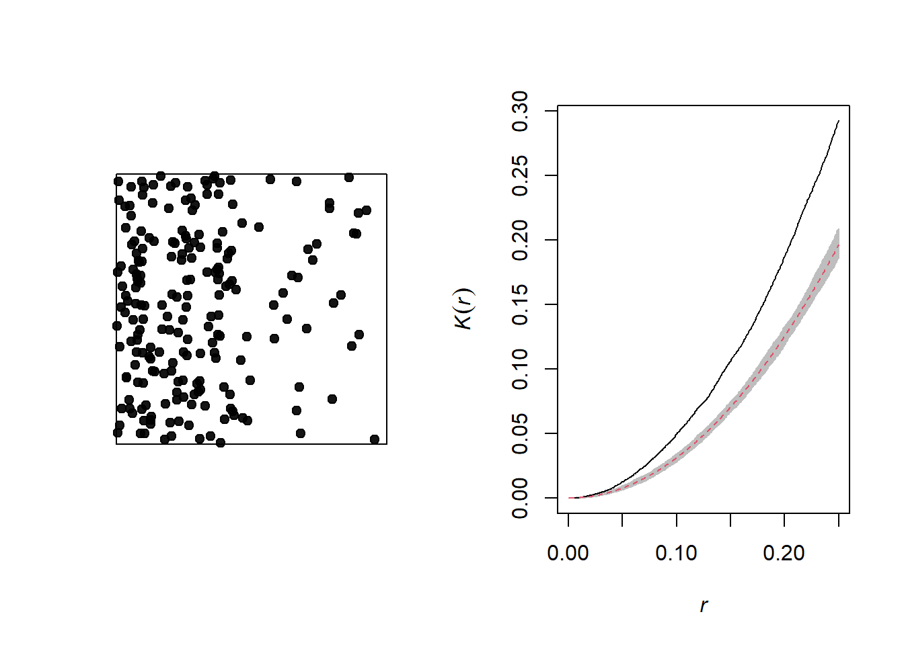
A density gradient can be confused with an aggregation of points, as can be seen on the graph of the corresponding Ripley’s \(K\). In order to differentiate the two phenomena, we can correct the \(K\) function so that the number of neighbours is normalized not by the global intensity, but by the intensity estimated at the position of the point.
For this type of analysis, we must also make sure that the null model corresponds to a heterogeneous Poisson process (i.e. the points remain independent of each other, but their density varies in space).
Below is the graph of the \(K\) for this same pattern, after controlling for heterogeneity.
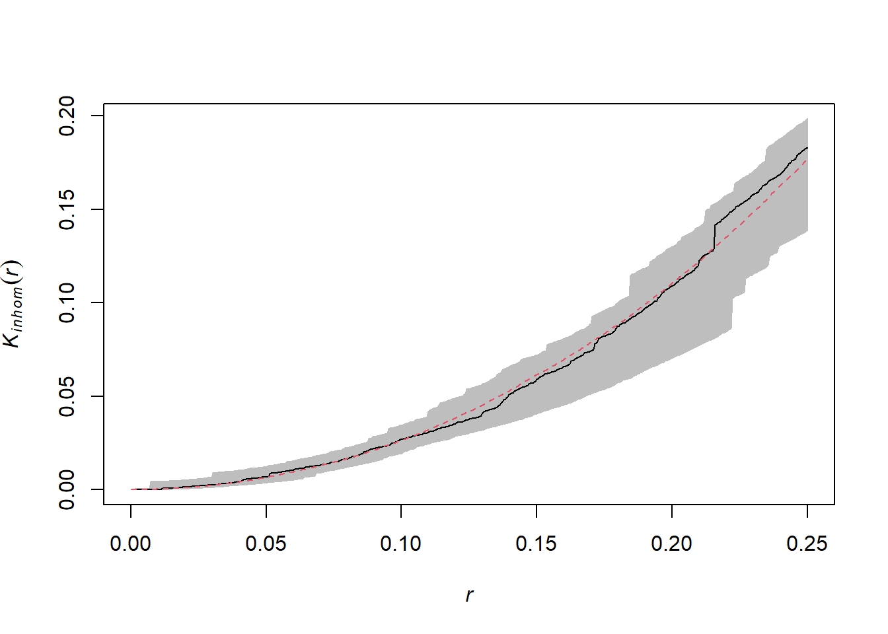
One can only differentiate a density gradient from a point aggregation process if the two processes operate at different scales. In general, we can remove the effect of a large-scale gradient to detect a smaller-scale aggregation.
Relationship between two point patterns
Finally, let’s consider a case where we have two point patterns, for example the position of trees of two species in a plot (orange and green dots in the graph below). Each of the two patterns may or may not show aggregations of points.
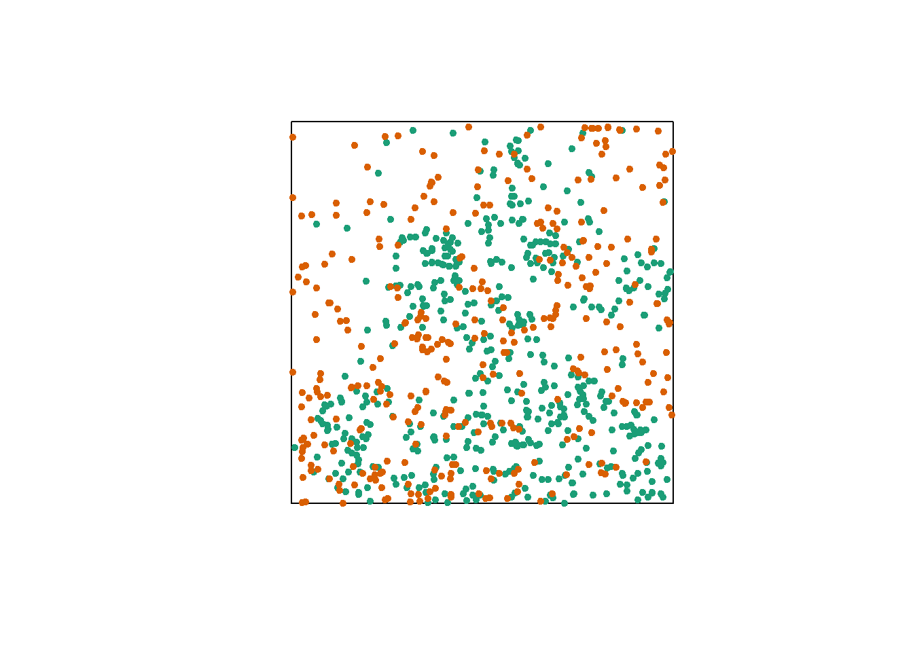
Regardless of this aggregation at the species level, we want to determine whether the two species are arranged independently. In other words, does the probability of observing a tree of one species depend on the presence of a tree of the other species at a given distance?
The bivariate version of Ripley’s \(K\) allows us to answer this question. For two patterns designated 1 and 2, the index \(K_{12}(r)\) calculates the mean number of points in pattern 2 at a distance \(r\) from a point in pattern 1, normalized by the density of pattern 2.
In theory, this index is symmetrical, so \(K_{12}(r) = K_{21}(r)\) and there is no difference according to whether the points of pattern 1 or 2 are chosen as “focal” points for the analysis. However, due to the randomness of the patterns, the distribution of \(K\) determined by simulating a null model may vary in both cases.
The choice of an appropriate null model is important here. In order to determine whether there is significant attraction or repulsion between the two patterns, the position of one pattern relative to the other must be randomized, while maintaining the spatial structure of each pattern taken in isolation.
One way to do this randomization is to shift one of the two patterns horizontally and/or vertically by a random distance. The part of the pattern that “comes out” on one side of the window is attached to the other side. This method is called a toroidal shift, because by connecting the top and bottom as well as the left and right of a rectangular surface, we obtain the shape of a torus (a three-dimensional “donut”).

The graph above shows a translation of the green pattern to the right, while the orange pattern remains in the same place. The green points in the shaded area are brought back to the other side. Note that while this method generally preserves the structure of each pattern while randomizing their relative position, it can have some drawbacks, such as dividing clusters of dots that are near the cutoff point.
For more information
This part was intended to illustrate the main concepts of point pattern analysis. You are invited to consult specialized resources, such as the recommended textbook by Wiegand and Moloney (2013) in the references, to learn more about these methods. In particular:
In addition to Ripley’s \(K\), several other summary statistics can be used to describe point patterns, for example, the mean distance to the nearest neighbour.
The estimation of the summary statistics of a point pattern must take into account “edge effects”, i.e. we do not know all the neighbours of the points near the edge of the observation window. We have not discussed these correction methods here.
In addition to analyzing the position of the points, we can analyze the aggregation of characteristics of the points, or marks. For example, if a spatial tree pattern contains dead and living trees, we can check whether the mortality is spatially random or spatially aggregated.
Point patterns in R
For this example, we use the data set semis_xy.csv, which represents the \((x, y)\) coordinates of two species (sp, B = birch and P = poplar) seedlings in a 15 x 15 m plot.
semis <- read.csv("../donnees/semis_xy.csv")
head(semis)## x y sp
## 1 14.73 0.05 P
## 2 14.72 1.71 P
## 3 14.31 2.06 P
## 4 14.16 2.64 P
## 5 14.12 4.15 B
## 6 9.88 4.08 BThe spatstat package allows us to perform point pattern analysis in R. The first step consists in transforming our data table into a ppp object (point pattern) with the function of the same name. In this function, we specify which columns contain the coordinates x and y as well as the marks (marks), which will be here the species codes. It is also necessary to specify an observation window (window) using the owin function, at which we specify the plot boundaries in x and y.
library(spatstat)
semis <- ppp(x = semis$x, y = semis$y, marks = as.factor(semis$sp),
window = owin(xrange = c(0, 15), yrange = c(0, 15)))
semis## Marked planar point pattern: 281 points
## Multitype, with levels = B, P
## window: rectangle = [0, 15] x [0, 15] unitsMarks can be numeric or categorical. Note that for categorical marks such as in this case, the variable must be explicitly converted to a factor.
The plot function applied to a pattern of points shows a diagram of the pattern.
plot(semis)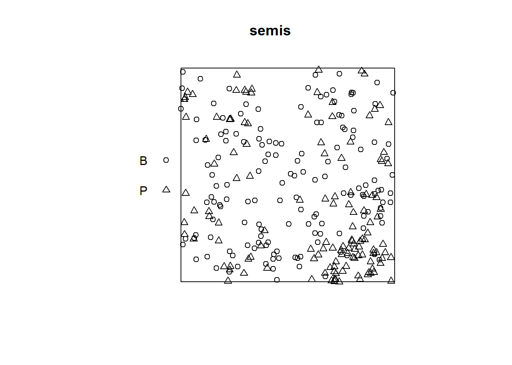
The intensity function calculates the density of the points of each species per unit area, here in \(m^2\).
intensity(semis)## B P
## 0.6666667 0.5822222To first analyze the distribution of each species separately, we separate the pattern with split. Since the pattern contains marks, the separation is done automatically according to the value of the marks. The result is a list of two point patterns.
semis_split <- split(semis)
plot(semis_split)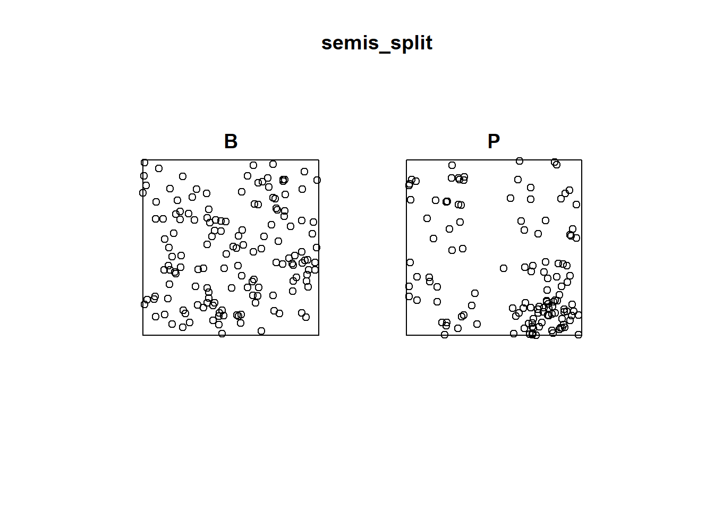
The Kest function calculates Ripley’s \(K\) for a series of distances up to (by default) 1/4 of the width of the window. Here we apply it to the first pattern (birch) by choosing split_split[[1]]. Note that double square brackets are necessary to choose an item from a list in R.
The argument correction = "iso" tells R to apply an isotropic correction for border effects.
k <- Kest(semis_split[[1]], correction = "iso")
plot(k)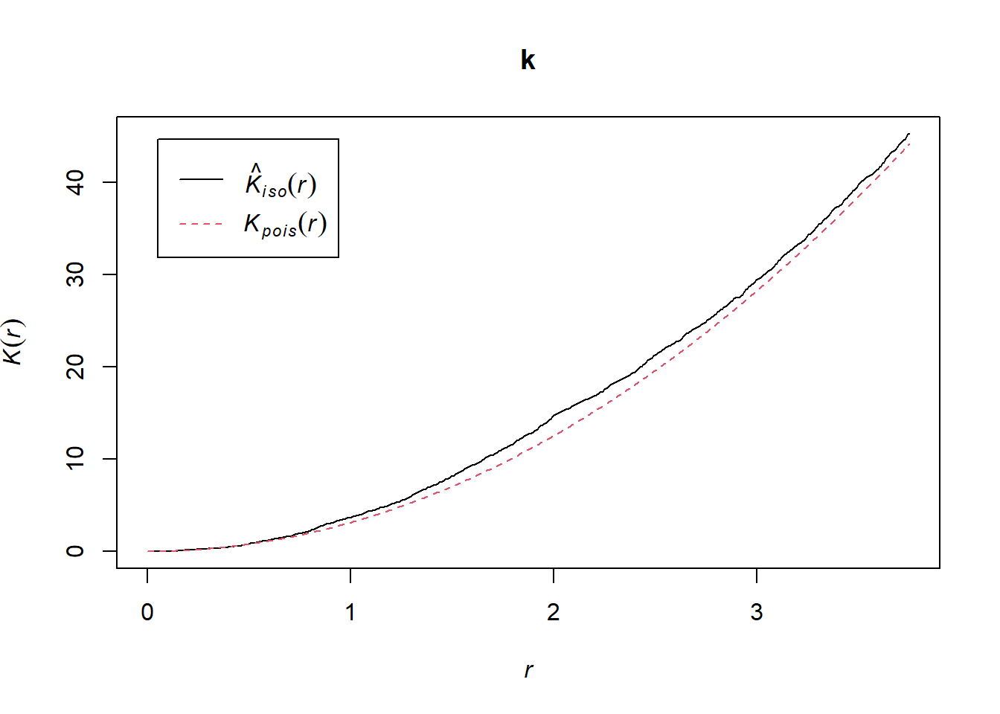
According to this graph, there seems to be an excess of neighbours starting at a radius of 1 m. To check if this is a significant deviation, we produce a simulation envelope with the function envelope. The first argument of envelope is a point pattern to which the simulations will be compared, the second one is a function to be computed (here, Kest) for each simulated pattern, then we add the arguments of the Kest function (here, only correction).
plot(envelope(semis_split[[1]], Kest, correction = "iso"), legend = FALSE)## Generating 99 simulations of CSR ...
## 1, 2, 3, 4, 5, 6, 7, 8, 9, 10, 11, 12, 13, 14, 15, 16, 17, 18, 19, 20, 21, 22, 23, 24, 25, 26, 27, 28, 29, 30, 31, 32, 33, 34, 35, 36, 37, 38, 39, 40,
## 41, 42, 43, 44, 45, 46, 47, 48, 49, 50, 51, 52, 53, 54, 55, 56, 57, 58, 59, 60, 61, 62, 63, 64, 65, 66, 67, 68, 69, 70, 71, 72, 73, 74, 75, 76, 77, 78, 79, 80,
## 81, 82, 83, 84, 85, 86, 87, 88, 89, 90, 91, 92, 93, 94, 95, 96, 97, 98, 99.
##
## Done.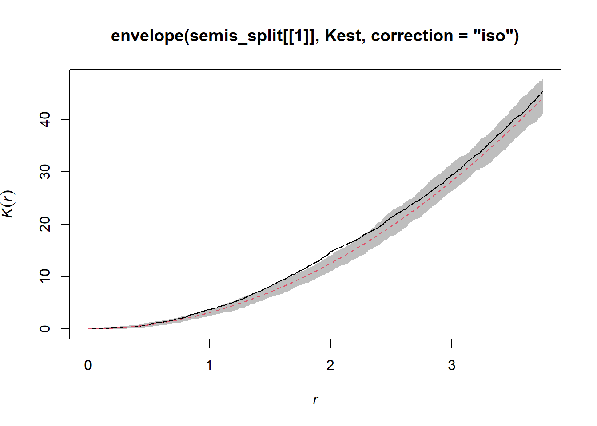
As indicated by the message, this function performs by default 99 simulations of the null hypothesis corresponding to a totally random spatial structure (CSR, for complete spatial randomness).
The observed curve falls outside the envelope of the 99 simulations near \(r = 2\). One must be careful not to interpret too quickly a result that is outside the envelope. Although there is about a 1% probability of obtaining a more extreme result under the null hypothesis at a given distance, the envelope is calculated for a large number of values of the distance and we do not make a correction for multiple comparisons. Thus, a significant difference for a very small range of values of \(r\) may simply be due to chance.
In contrast, the similar graph for poplar shows significant aggregation up to 3 m and beyond.
plot(envelope(semis_split[[2]], Kest, correction = "iso"), legend = FALSE)## Generating 99 simulations of CSR ...
## 1, 2, 3, 4, 5, 6, 7, 8, 9, 10, 11, 12, 13, 14, 15, 16, 17, 18, 19, 20, 21, 22, 23, 24, 25, 26, 27, 28, 29, 30, 31, 32, 33, 34, 35, 36, 37, 38, 39, 40,
## 41, 42, 43, 44, 45, 46, 47, 48, 49, 50, 51, 52, 53, 54, 55, 56, 57, 58, 59, 60, 61, 62, 63, 64, 65, 66, 67, 68, 69, 70, 71, 72, 73, 74, 75, 76, 77, 78, 79, 80,
## 81, 82, 83, 84, 85, 86, 87, 88, 89, 90, 91, 92, 93, 94, 95, 96, 97, 98, 99.
##
## Done.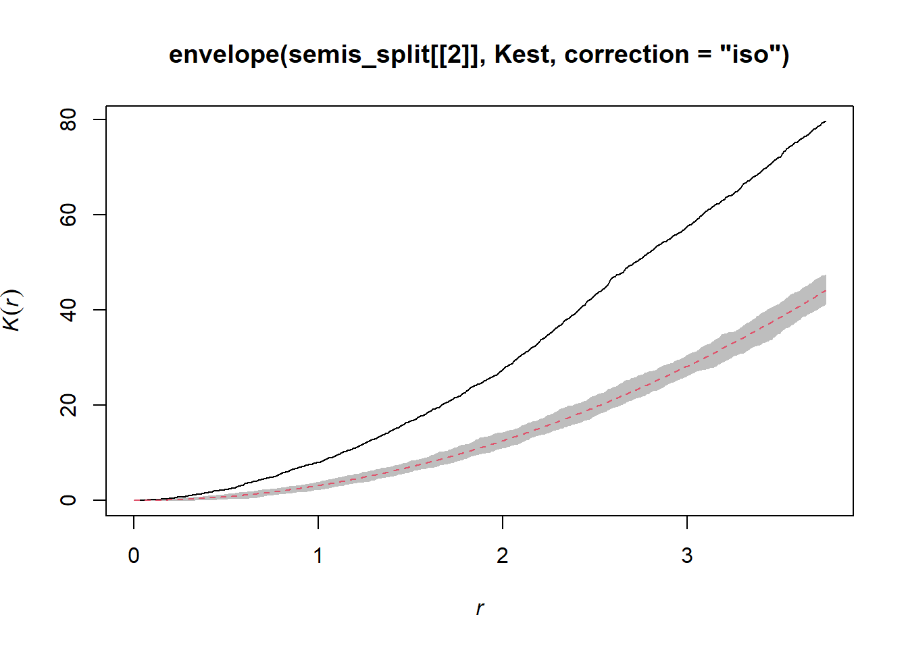
To determine if the position of points in each species depend on the other species, we calculate the bivariate \(K_{ij}\), with birch as the focal species \(i\) and poplar as the neighbouring species \(j\), using the Kcross function.
plot(Kcross(semis, i = "B", j = "P", correction = "iso"), legend = FALSE)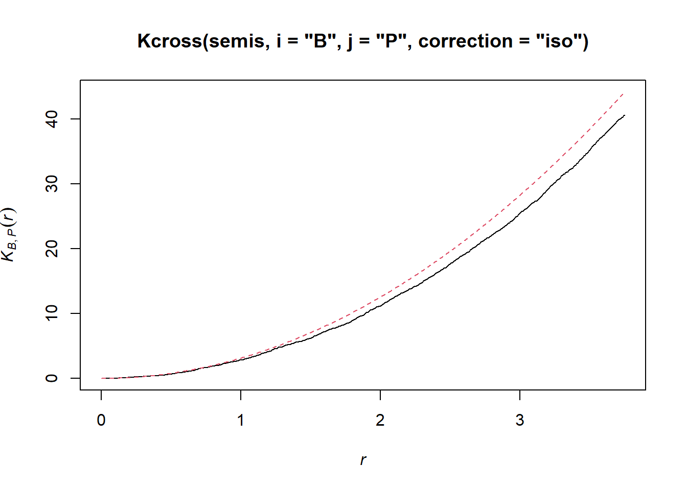
Here, the observed \(K\) is lower than the theoretical value, indicating a possible repulsion of both patterns.
To determine the envelope of the \(K\) according to the null hypothesis of independence of the two patterns, we must specify that the simulations must be based on a translation of the patterns and not on complete spatial randomness. We indicate that the simulations must use the function rshift (random shift) with the argument simulate = rshift. As in the previous case, all the arguments necessary for Kcross must be repeated in the envelope function.
plot(envelope(semis, Kcross, simulate = rshift, i = "P", j = "B",
correction = "iso"), legend = FALSE)## Generating 99 simulations by evaluating function ...
## 1, 2, 3, 4, 5, 6, 7, 8, 9, 10, 11, 12, 13, 14, 15, 16, 17, 18, 19, 20, 21, 22, 23, 24, 25, 26, 27, 28, 29, 30, 31, 32, 33, 34, 35, 36, 37, 38, 39, 40,
## 41, 42, 43, 44, 45, 46, 47, 48, 49, 50, 51, 52, 53, 54, 55, 56, 57, 58, 59, 60, 61, 62, 63, 64, 65, 66, 67, 68, 69, 70, 71, 72, 73, 74, 75, 76, 77, 78, 79, 80,
## 81, 82, 83, 84, 85, 86, 87, 88, 89, 90, 91, 92, 93, 94, 95, 96, 97, 98, 99.
##
## Done.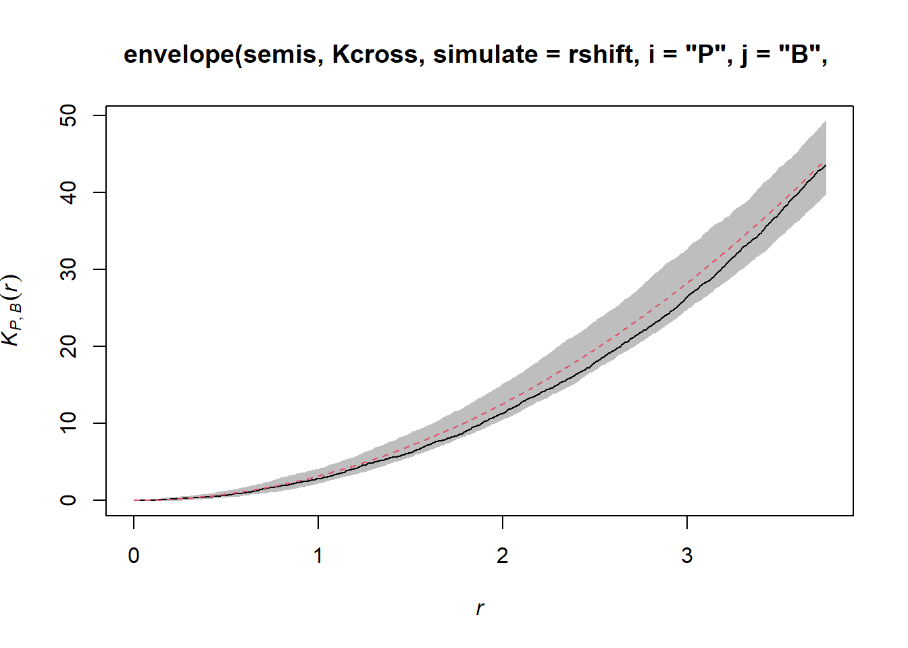
Here, the observed curve is totally within the envelope, so we do not reject the null hypothesis of independence of the two patterns.
Geostatistical models
Geostatistics refers to a group of techniques that originated in the earth sciences. Geostatistics is concerned with variables that are continuously distributed in space, where the distribution is estimated by sampling a number of points. A classic example of these techniques comes from the mining field, where the aim was to create a map of the concentration of ore at a site from samples taken at different points on the site.
For these models, we will assume that \(z(x, y)\) is a stationary spatial variable measured in \(x\) and \(y\) coordinates.
Variogram
A central aspect of geostatistics is the estimation of the variogram \(\gamma_z\). The variogram is equal to half the mean square difference between the values of \(z\) for two points \((x_i, y_i)\) and \((x_j, y_j)\) separated by a distance \(h\).
\[\gamma_z(h) = \frac{1}{2} \text{E} \left[ \left( z(x_i, y_i) - z(x_j, y_j) \right)^2 \right]_{d_{ij} = h}\]
In this equation, the \(\text{E}\) function with the index \(d_{ij}=h\) designates the statistical expectation (i.e., the mean) of the squared deviation between the values of \(z\) for points separated by a distance \(h\).
If we want instead to express the autocorrelation \(\rho_z(h)\) between measures of \(z\) separated by a distance \(h\), it is related to the variogram by the equation:
\[\gamma_z = \sigma_z^2(1 - \rho_z)\] ,
where \(\sigma_z^2\) is the global variance of \(z\).
Note that \(\gamma_z = \sigma_z^2\) when we reach a distance where the measurements of \(z\) are independent, so \(\rho_z = 0\). In this case, we can see that \(\gamma_z\) is similar to a variance, although it is sometimes called “semivariogram” or “semivariance” because of the 1/2 factor in the above equation.
Theoretical models for the variogram
Several parametric models have been proposed to represent the spatial correlation as a function of the distance between sampling points. Let us first consider a correlation that decreases exponentially:
\[\rho_z(h) = e^{-h/r}\]
Here, \(\rho_z = 1\) for \(h = 0\) and the correlation is multiplied by \(1/e \approx 0.37\) each time the distance increases by \(r\). In this context, \(r\) is called the range of the correlation.
From the above equation, we can calculate the corresponding variogram.
\[\gamma_z(h) = \sigma_z^2 (1 - e^{-h/r})\]
Here is a graphical representation of this variogram.
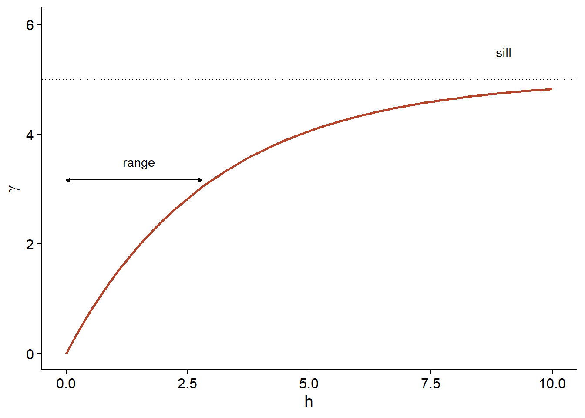
Because of the exponential function, the value of \(\gamma\) at large distances approaches the global variance \(\sigma_z^2\) without exactly reaching it. This asymptote is called a sill in the geostatistical context and is represented by the symbol \(s\).
Finally, it is sometimes unrealistic to assume a perfect correlation when the distance tends towards 0, because of a possible variation of \(z\) at a very small scale. A nugget effect, denoted \(n\), can be added to the model so that \(\gamma\) approaches \(n\) (rather than 0) if \(h\) tends towards 0. The term nugget comes from the mining origin of these techniques, where a nugget could be the source of a sudden small-scale variation in the concentration of a mineral.
By adding the nugget effect, the remainder of the variogram is “compressed” to keep the same sill, resulting in the following equation.
\[\gamma_z(h) = n + (s - n) (1 - e^{-h/r})\]
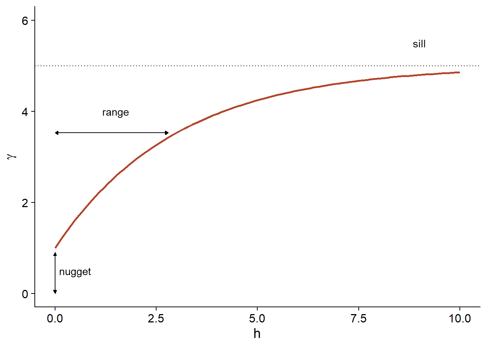
In addition to the exponential model, two other common theoretical models for the variogram are the Gaussian model (where the correlation follows a half-normal curve), and the spherical model (where the variogram increases linearly at the start and then curves and reaches the plateau at a distance equal to its range \(r\)). The spherical model thus allows the correlation to be exactly 0 at large distances, rather than gradually approaching zero in the case of the other models.
| Model | \(\rho(h)\) | \(\gamma(h)\) |
|---|---|---|
| Exponential | \(\exp\left(-\frac{h}{r}\right)\) | \(s \left(1 - \exp\left(-\frac{h}{r}\right)\right)\) |
| Gaussian | \(\exp\left(-\frac{h^2}{r^2}\right)\) | \(s \left(1 - \exp\left(-\frac{h^2}{r^2}\right)\right)\) |
| Spherical \((h < r)\) * | \(1 - \frac{3}{2}\frac{h}{r} + \frac{1}{2}\frac{h^3}{r^3}\) | \(s \left(\frac{3}{2}\frac{h}{r} - \frac{1}{2}\frac{h^3}{r^3} \right)\) |
* For the spherical model, \(\rho = 0\) and \(\gamma = s\) if \(h \ge r\).
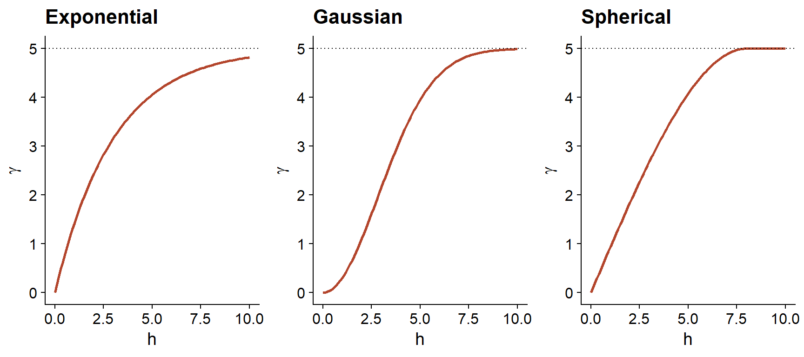
Empirical variogram
To estimate \(\gamma_z(h)\) from empirical data, we need to define distance classes, thus grouping different distances within a margin of \(\pm \delta\) around a distance \(h\), then calculating the mean square deviation for the pairs of points in that distance class.
\[\hat{\gamma_z}(h) = \frac{1}{2 N_{\text{pairs}}} \sum \left[ \left( z(x_i, y_i) - z(x_j, y_j) \right)^2 \right]_{d_{ij} = h \pm \delta}\]
We will see in the next section how to estimate a variogram in R.
Variogram and temporal data
A variogram can also be estimated as a function of time deviations, which in this case is considered as a 1-dimensional space. This makes it possible to model the time dependence for a series of measurements taken at irregular intervals, when the autoregressive models seen at the last class do not apply.
Regression model with spatial correlation
The following equation represents a multiple linear regression including residual spatial correlation:
\[v = \beta_0 + \sum_i \beta_i u_i + z + \epsilon\]
Here, \(v\) designates the response variable and \(u\) the predictors, to avoid confusion with the spatial coordinates \(x\) and \(y\).
In addition to the residual \(\epsilon\) that is independent between observations, the model includes a term \(z\) that represents the spatially correlated portion of the residual variance.
Here are suggested steps to apply this type of model:
Fit the regression model without spatial correlation.
Verify the presence of spatial correlation from the empirical variogram of the residuals.
Fit one or more regression models with spatial correlation and select the one that shows the best fit to the data (for example, as determined by the AIC).
We will see in the last part of this class how to include spatial correlation terms in complex models, including mixed effects or Bayesian models.
Geostatistical models in R
The gstat package contains functions related to geostatistics. For this example, we will use the oxford dataset from this package, which contains measurements of physical and chemical properties for 126 soil samples from a site, along with their coordinates XCOORD and YCOORD.
library(gstat)
data(oxford)
str(oxford)## 'data.frame': 126 obs. of 22 variables:
## $ PROFILE : num 1 2 3 4 5 6 7 8 9 10 ...
## $ XCOORD : num 100 100 100 100 100 100 100 100 100 100 ...
## $ YCOORD : num 2100 2000 1900 1800 1700 1600 1500 1400 1300 1200 ...
## $ ELEV : num 598 597 610 615 610 595 580 590 598 588 ...
## $ PROFCLASS: Factor w/ 3 levels "Cr","Ct","Ia": 2 2 2 3 3 2 3 2 3 3 ...
## $ MAPCLASS : Factor w/ 3 levels "Cr","Ct","Ia": 2 3 3 3 3 2 2 3 3 3 ...
## $ VAL1 : num 3 3 4 4 3 3 4 4 4 3 ...
## $ CHR1 : num 3 3 3 3 3 2 2 3 3 3 ...
## $ LIME1 : num 4 4 4 4 4 0 2 1 0 4 ...
## $ VAL2 : num 4 4 5 8 8 4 8 4 8 8 ...
## $ CHR2 : num 4 4 4 2 2 4 2 4 2 2 ...
## $ LIME2 : num 4 4 4 5 5 4 5 4 5 5 ...
## $ DEPTHCM : num 61 91 46 20 20 91 30 61 38 25 ...
## $ DEP2LIME : num 20 20 20 20 20 20 20 20 40 20 ...
## $ PCLAY1 : num 15 25 20 20 18 25 25 35 35 12 ...
## $ PCLAY2 : num 10 10 20 10 10 20 10 20 10 10 ...
## $ MG1 : num 63 58 55 60 88 168 99 59 233 87 ...
## $ OM1 : num 5.7 5.6 5.8 6.2 8.4 6.4 7.1 3.8 5 9.2 ...
## $ CEC1 : num 20 22 17 23 27 27 21 14 27 20 ...
## $ PH1 : num 7.7 7.7 7.5 7.6 7.6 7 7.5 7.6 6.6 7.5 ...
## $ PHOS1 : num 13 9.2 10.5 8.8 13 9.3 10 9 15 12.6 ...
## $ POT1 : num 196 157 115 172 238 164 312 184 123 282 ...Suppose that we want to model the magnesium concentration (MG1), represented as a function of the spatial position in the following graph.
library(ggplot2)
ggplot(oxford, aes(x = YCOORD, y = XCOORD, size = MG1)) +
geom_point() +
coord_fixed()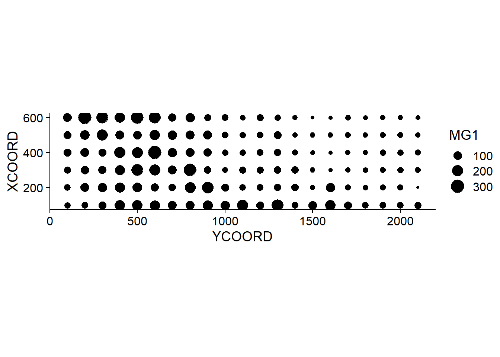
Note that the \(x\) and \(y\) axes have been inverted to save space. The coord_fixed() function of ggplot2 ensures that the scale is the same on both axes, which is useful for representing spatial data.
We can immediately see that these measurements were taken on a 100 m grid. It seems that the magnesium concentration is spatially correlated, although it may be a correlation induced by another variable. In particular, we know that the concentration of magnesium is negatively related to the soil pH (PH1).
ggplot(oxford, aes(x = PH1, y = MG1)) +
geom_point()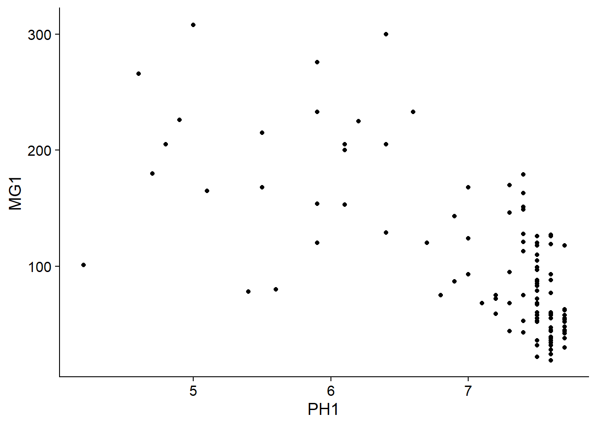
The variogram function of gstat is used to estimate a variogram from empirical data. Here is the result obtained for the variable MG1.
var_mg <- variogram(MG1 ~ 1, locations = ~ XCOORD + YCOORD, data = oxford)
var_mg## np dist gamma dir.hor dir.ver id
## 1 225 100.0000 1601.404 0 0 var1
## 2 200 141.4214 1950.805 0 0 var1
## 3 548 215.0773 2171.231 0 0 var1
## 4 623 303.6283 2422.245 0 0 var1
## 5 258 360.5551 2704.366 0 0 var1
## 6 144 400.0000 2948.774 0 0 var1
## 7 570 427.5569 2994.621 0 0 var1
## 8 291 500.0000 3402.058 0 0 var1
## 9 366 522.8801 3844.165 0 0 var1
## 10 200 577.1759 3603.060 0 0 var1
## 11 458 619.8400 3816.595 0 0 var1
## 12 90 670.8204 3345.739 0 0 var1The formula MG1 ~ 1 indicates that no linear predictor is included in this model, while the argument locations indicates which variables in the data frame correspond to the spatial coordinates.
In the resulting table, gamma is the value of the variogram for the distance class centered on dist, while np is the number of pairs of points in that class. Here, since the points are located on a grid, we obtain regular distance classes (e.g.: 100 m for neighbouring points on the grid, 141 m for diagonal neighbours, etc.) We can illustrate the variogram with plot.
plot(var_mg, col = "black")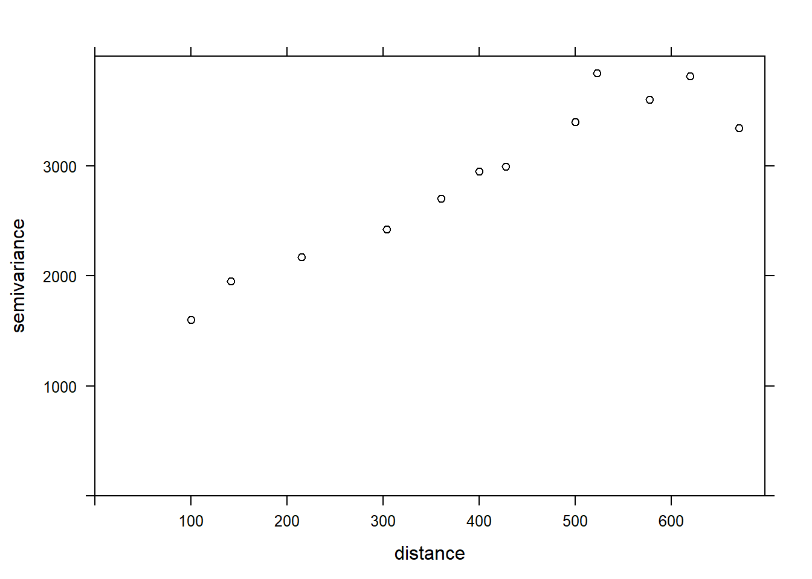
If we want to estimate the residual spatial correlation of MG1 after including the effect of PH1, we can add that predictor to the formula.
var_mg <- variogram(MG1 ~ PH1, locations = ~ XCOORD + YCOORD, data = oxford)
plot(var_mg, col = "black")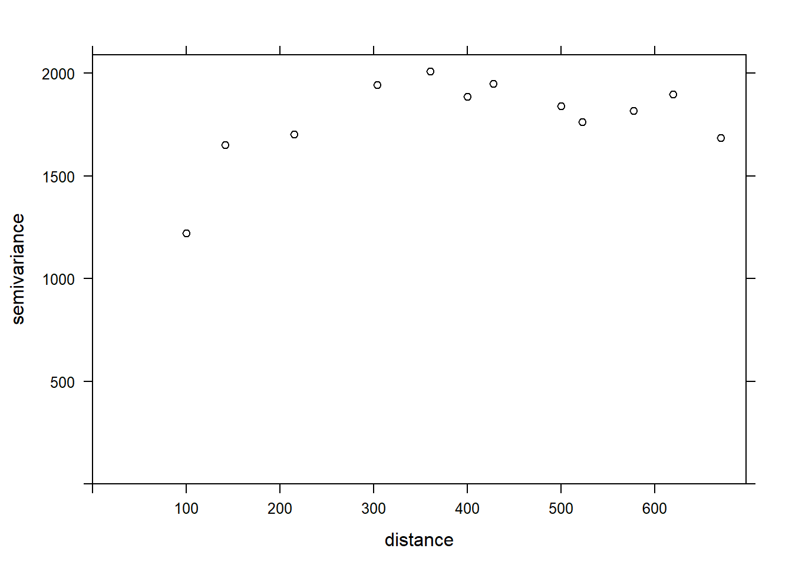
Including the effect of pH, the range of the spatial correlation seems to decrease, while the plateau is reached around 300 m. It even seems that the variogram decreases beyond 400 m. In general, we assume that the variance between two points does not decrease with distance, unless there is a periodic spatial pattern.
The function fit.variogram accepts as arguments a variogram estimated from the data, as well as a theoretical model described in a vgm function, and then estimates the parameters of that model according to the data. The fitting is done by the method of least squares.
For example, vgm("Exp") means we want to fit an exponential model.
vfit <- fit.variogram(var_mg, vgm("Exp"))
vfit## model psill range
## 1 Nug 0.000 0.00000
## 2 Exp 1951.496 95.11235There is no nugget effect, because psill = 0 for the Nug (nugget) part of the model. The exponential part has a sill at 1951 (corresponding to \(\sigma_z^2\)) and a range of 95 m.
To compare different models, a vector of model names can be given to vgm. In the following example, we include the exponential, gaussian (“Gau”) and spherical (“Sph”) models.
vfit <- fit.variogram(var_mg, vgm(c("Exp", "Gau", "Sph")))
vfit## model psill range
## 1 Nug 0.000 0.00000
## 2 Exp 1951.496 95.11235The function gives us the result of the model with the best fit (lowest sum of squared deviations), which here is the same exponential model.
Finally, we can superimpose the theoretical model and the empirical variogram on the same graph.
plot(var_mg, vfit, col = "black")
Areal data
Areal data are variables measured for regions of space, defined by polygons. This type of data is more common in the social sciences, human geography and epidemiology, where data is often available at the scale of administrative divisions.
This type of data also appears frequently in natural resource management. For example, the following map shows the forest management units of the Ministère de la Forêt, de la Faune et des Parcs du Québec.

Suppose that a variable is available at the level of these management units. How can we model the spatial correlation between units that are spatially close together?
One option would be to apply the geostatistical methods seen before, for example by calculating the distance between the centers of the polygons.
Another option, which is more adapted for areal data, is to define a network where each region is connected to neighbouring regions by a link. It is then assumed that the variables are directly correlated between neighbouring regions only. (Note, however, that direct correlations between immediate neighbours also generate indirect correlations for a chain of neighbours).
In this type of model, the correlation is not necessarily the same from one link to another. In this case, each link in the network can be associated with a weight representing its importance for the spatial correlation. We represent these weights by a matrix \(W\) where \(w_{ij}\) is the weight of the link between regions \(i\) and \(j\). A region has no link with itself, so \(w_{ii} = 0\).
A simple choice for \(W\) is to assign a weight equal to 1 if the regions are neighbours, otherwise 0 (binary weight).
In addition to land divisions represented by polygons, another example of areal data consists of a grid where the variable is calculated for each cell of the grid. In this case, a cell generally has 4 or 8 neighbouring cells, depending on whether diagonals are included or not.
Moran’s I
Before discussing spatial autocorrelation models, we present Moran’s \(I\) statistic, which allows us to test whether a significant correlation is present between neighbouring regions.
Moran’s \(I\) is a spatial autocorrelation coefficient of \(z\), weighted by the \(w_{ij}\). It therefore takes values between -1 and 1.
\[I = \frac{N}{\sum_i \sum_j w_{ij}} \frac{\sum_i \sum_j w_{ij} (z_i - \bar{z}) (z_j - \bar{z})}{\sum_i (z_i - \bar{z})^2}\]
In this equation, we recognize the expression of a correlation, which is the product of the deviations from the mean for two variables \(z_i\) and \(z_j\), divided by the product of their standard deviations (it is the same variable here, so we get the variance). The contribution of each pair \((i, j)\) is multiplied by its weight \(w_{ij}\) and the term on the left (the number of regions \(N\) divided by the sum of the weights) ensures that the result is bounded between -1 and 1.
Since the distribution of \(I\) is known in the absence of spatial autocorrelation, this statistic serves to test the null hypothesis that there is no spatial correlation between neighbouring regions.
Although we will not see an example in this course, Moran’s \(I\) can also be applied to point data. In this case, we divide the pairs of points into distance classes and calculate \(I\) for each distance class; the weight \(w_{ij} = 1\) if the distance between \(i\) and \(j\) is in the desired distance class, otherwise 0.
Spatial autoregression models
Let us recall the formula for a linear regression with spatial dependence:
\[v = \beta_0 + \sum_i \beta_i u_i + z + \epsilon\] ,
where \(z\) is the portion of the residual variance that is spatially correlated.
There are two main types of autoregressive models to represent the spatial dependence of \(z\): conditional autoregression (CAR) and simultaneous autoregressive (SAR).
Conditional autoregressive (CAR) model
In the conditional autoregressive model, the value of \(z_i\) for the region \(i\) follows a normal distribution: its mean depends on the value \(z_j\) of neighbouring regions, multiplied by the weight \(w_{ij}\) and a correlation coefficient \(\rho\); its standard deviation \(\sigma_{z_i}\) may vary from one region to another.
\[z_i \sim \text{N}\left(\sum_j \rho w_{ij} z_j,\sigma_{z_i} \right)\]
In this model, if \(w_{ij}\) is a binary matrix (0 for non-neighbours, 1 for neighbours), then \(\rho\) is the coefficient of partial correlation between neighbouring regions. This is similar to a first-order autoregressive model in the context of time series, where the autoregression coefficient indicates the partial correlation.
Simultaneous autoregressive (SAR) model
In the simultaneous autoregressive model, the value of \(z_i\) is given directly by the sum of contributions from neighbouring values \(z_j\), multiplied by \(\rho w_{ij}\), with an independent residual \(\nu_i\) of standard deviation \(\sigma_z\).
\[z_i = \sum_j \rho w_{ij} z_j + \nu_i\]
At first glance, this looks like a temporal autoregressive model. However, there is an important conceptual difference. For temporal models, the causal influence is directed in only one direction: \(v(t-2)\) affects \(v(t-1)\) which then affects \(v(t)\). For a spatial model, each \(z_j\) that affects \(z_i\) depends in turn on \(z_i\). Thus, to determine the joint distribution of \(z\), a system of equations must be solved simultaneously (hence the name of the model).
For this reason, although this model resembles the formula of CAR model, the solutions of the two models differ and in the case of SAR, the coefficient \(\rho\) is not directly equal to the partial correlation due to each neighbouring region.
For more details on the mathematical aspects of these models, see the article by Ver Hoef et al. (2018) suggested in reference.
For the moment, we will consider SAR and CAR as two types of possible models to represent a spatial correlation on a network. We can always fit several models and compare them with the AIC to choose the best form of correlation or the best weight matrix.
The CAR and SAR models share an advantage over geostatistical models in terms of efficiency. In a geostatistical model, spatial correlations are defined between each pair of points, although they become negligible as distance increases. For a CAR or SAR model, only neighbouring regions contribute and most weights are equal to 0, making these models faster to fit than a geostatistical model when the data are massive.
Finally, note that there is also a spatial equivalent of moving average (MA) models seen in a temporal context. However, since their application is rarer, we do not discuss them in this course.
Areal data in R
To illustrate the analysis of areal data in R, we load the packages spData (containing examples of spatial data), spdep (to define spatial networks and calculate the Moran index) and spatialreg (for SAR and CAR models).
library(spData)
library(spdep)
library(spatialreg)As an example, we will use the us_states spatial dataset which contains polygons for 49 U.S. states (all states excluding Alaska and Hawaii, plus the District of Columbia).
data(us_states)
head(us_states)## Simple feature collection with 6 features and 6 fields
## geometry type: MULTIPOLYGON
## dimension: XY
## bbox: xmin: -114.8136 ymin: 24.55868 xmax: -71.78699 ymax: 42.04964
## CRS: EPSG:4269
## GEOID NAME REGION AREA total_pop_10 total_pop_15
## 1 01 Alabama South 133709.27 [km^2] 4712651 4830620
## 2 04 Arizona West 295281.25 [km^2] 6246816 6641928
## 3 08 Colorado West 269573.06 [km^2] 4887061 5278906
## 4 09 Connecticut Norteast 12976.59 [km^2] 3545837 3593222
## 5 12 Florida South 151052.01 [km^2] 18511620 19645772
## 6 13 Georgia South 152725.21 [km^2] 9468815 10006693
## geometry
## 1 MULTIPOLYGON (((-88.20006 3...
## 2 MULTIPOLYGON (((-114.7196 3...
## 3 MULTIPOLYGON (((-109.0501 4...
## 4 MULTIPOLYGON (((-73.48731 4...
## 5 MULTIPOLYGON (((-81.81169 2...
## 6 MULTIPOLYGON (((-85.60516 3...It is a spatial data frame where the last column defines the polygon corresponding to the state and the other columns define variables associated with it. We will not discuss this data structure in detail, but note that the sf packge allows you to import vector GIS files (shapefiles) in this data format for R.
To illustrate one of the variables on a map, we call the function plot with the column name in square brackets and quotes.
plot(us_states["REGION"])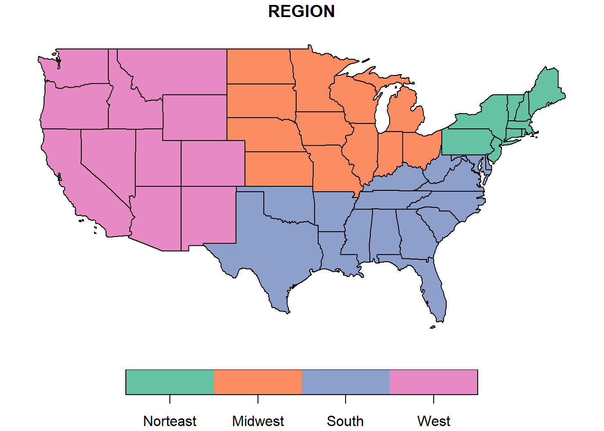
Here we want to model the median income in each state in 2015. This variable median_income_15 is found in another dataset, us_states_df.
data(us_states_df)
head(us_states_df)## # A tibble: 6 x 5
## state median_income_10 median_income_15 poverty_level_10 poverty_level_15
## <chr> <dbl> <dbl> <dbl> <dbl>
## 1 Alabama 21746 22890 786544 887260
## 2 Alaska 29509 31455 64245 72957
## 3 Arizona 26412 26156 933113 1180690
## 4 Arkansas 20881 22205 502684 553644
## 5 California 27207 27035 4919945 6135142
## 6 Colorado 29365 30752 584184 653969We use the inner_join function of dplyr to join the two datasets, specifying with by that the NAME column of us_states matches the state column of us_states_df.
library(dplyr)
us_states <- inner_join(us_states, us_states_df,
by = c("NAME" = "state"))
plot(us_states["median_income_15"])
The poly2nb function of the spdep package defines a neighbourhood network from polygons. The result vois is a list of 49 elements where each element contains the indices of the neighbouring polygons of a given polygon.
vois <- poly2nb(us_states)
vois[[1]]## [1] 5 6 36 44We can illustrate this network by extracting the coordinates of the center of each state, creating a blank map with plot(us_states["geometry"]), then adding the network as an additional layer with plot(vois, add = TRUE, coords = coords).
coords <- st_centroid(us_states) %>%
st_coordinates()
plot(us_states["geometry"])
plot(vois, add = TRUE, col = "red", coords = coords)
We still have to add weights to each network link with the nb2listw function. The style of weight “B” corresponds to binary weights, i.e. 1 for the presence of a link and 0 for the absence of a link between two states.
Once these weights have been defined, we can verify if there is a significant autocorrelation of the median income between neighbouring states with the Moran test.
poids <- nb2listw(vois, style = "B")
moran.test(us_states$median_income_15, poids)##
## Moran I test under randomisation
##
## data: us_states$median_income_15
## weights: poids
##
## Moran I statistic standard deviate = 4.127, p-value = 1.838e-05
## alternative hypothesis: greater
## sample estimates:
## Moran I statistic Expectation Variance
## 0.342670652 -0.020833333 0.007758162The value \(I = 0.34\) is very significant judging by the \(p\)-value of the test.
Finally, we fit SAR and CAR models to these data with the `spautolm’ (spatial autoregressive linear model) function of spatialreg. Here is the code for a SAR model including the fixed effect of the region (west, mid-west, south or north-east).
modsp <- spautolm(median_income_15 ~ REGION, data = us_states,
listw = poids)
summary(modsp)##
## Call: spautolm(formula = median_income_15 ~ REGION, data = us_states,
## listw = poids)
##
## Residuals:
## Min 1Q Median 3Q Max
## -5632.95 -2243.24 -856.84 1781.90 11770.13
##
## Coefficients:
## Estimate Std. Error z value Pr(>|z|)
## (Intercept) 28703.411 1607.825 17.8523 <2e-16
## REGIONMidwest 42.832 2157.389 0.0199 0.9842
## REGIONSouth -1131.312 1904.512 -0.5940 0.5525
## REGIONWest -815.428 2393.545 -0.3407 0.7333
##
## Lambda: 0.12915 LR test value: 7.7579 p-value: 0.0053479
## Numerical Hessian standard error of lambda: 0.033239
##
## Log likelihood: -466.35
## ML residual variance (sigma squared): 9804100, (sigma: 3131.2)
## Number of observations: 49
## Number of parameters estimated: 6
## AIC: 944.7The value given by Lambda in the summary corresponds to the coefficient \(\rho\) in our description of the model. The likelihood ratio test (LR test) confirms that this residual spatial correlation (after accounting for the region effect) is significant.
To evaluate a CAR rather than SAR model, we must specify family = "CAR".
modsp2 <- spautolm(median_income_15 ~ REGION, data = us_states,
listw = poids, family = "CAR")
summary(modsp2)##
## Call: spautolm(formula = median_income_15 ~ REGION, data = us_states,
## listw = poids, family = "CAR")
##
## Residuals:
## Min 1Q Median 3Q Max
## -5709.20 -1999.90 -682.38 2072.01 11328.25
##
## Coefficients:
## Estimate Std. Error z value Pr(>|z|)
## (Intercept) 29022.2 1484.4 19.5519 <2e-16
## REGIONMidwest -408.0 2049.4 -0.1991 0.8422
## REGIONSouth -1436.2 1820.6 -0.7888 0.4302
## REGIONWest -1378.0 2239.7 -0.6153 0.5384
##
## Lambda: 0.16539 LR test value: 5.8956 p-value: 0.015179
## Numerical Hessian standard error of lambda: 0.031414
##
## Log likelihood: -467.2811
## ML residual variance (sigma squared): 10168000, (sigma: 3188.7)
## Number of observations: 49
## Number of parameters estimated: 6
## AIC: 946.56For a CAR model with binary weights, the value of Lambda (which we called \(\rho\)) directly gives the partial correlation coefficient between neighbouring states. Note that the AIC here is slightly higher than the SAR model, so the latter gave a better fit.
Spatial correlation in complex models
As for the class on time series, we conclude this class by presenting some avenues for integrating spatial correlations into more complex models.
Geostatistical models with nlme
In the last course, we saw that the lme function of the package nlme allowed us to include temporal correlations with terms of type corARMA. The same package contains spatial correlation functions, including exponential (corExp), Gaussian (corGaus) and spherical (corSpher) correlation.
Here is an example of a mixed linear model fitted with lme, where v is the response, u is a fixed effect and group is a random effect. The correlation argument indicates an exponential correlation as a function of the distance defined by the coordinates x and y, with a nugget effect nugget = TRUE.
library(nlme)
mod <- lme(v ~ u, data, random = list(groupe = ~1),
correlation = corExp(form = ~ x + y, nugget = TRUE))Note that the limitations of the nlme package mentioned in the last class still apply here: it is not possible to include several crossed (non-nested) effects and the package is not very efficient for estimating generalized models.
To add spatial correlation to a linear model, without random effects, we can replace lme by gls, for generalized least squares. This function is similar to lm, but allows correlations between model residuals.
library(nlme)
mod <- gls(v ~ u, data,
correlation = corExp(form = ~ x + y, nugget = TRUE))Finally, as we saw in the last course, the gamm function of the mgcv package combines the functionality of lme with the possibility to include additive effects (smoothing splines) for the predictors.
library(mgcv)
mod <- gamm(v ~ s(u), data, random = list(groupe = ~1),
correlation = corExp(form = ~ x + y, nugget = TRUE))Geostatistical models with brms
To include spatial correlation of the geostatistical type in a Bayesian model estimated with brms, we must specify a gp term, which describes a Gaussian process.
library(brms)
mod <- brm(v ~ u + gp(x, y, cov = "exp_quad"), data)The term gp indicates the variables containing the spatial coordinates (x, y) as well as the form of the covariance. Currently, only the Gaussian correlation (exp_quad, for exponential quadratic) is available.*
\(^*\) Gaussian processes with other correlation functions are possible, if they are manually coded with Stan. The term “Gaussian” in “Gaussian process” refers to the normal error distribution, not to the form of the spatial correlation.
Spatial autoregressive models with brms
On the other hand, the brm function allows us to specify a spatial autoregressive structure with sar and car terms, which is useful to combine a spatial autoregressive model with non-spatial random effects. The sar and car terms are only allowed in models where the response follows a normal or \(t\) distribution, so they cannot be combined with generalized models.
library(brms)
mod_sar <- brm(v ~ u + sar(W, type = "error"), data, data2 = list(W = W))
mod_car <- brm(v ~ u + car(W), data, data2 = list(W = W))Wis the weight matrix. Since this matrix is not part of thedata, it is given separately in thedata2argument.The argument
type = "error"insarrepresents the type of SAR model seen in this course, where the unexplained portion of the response is autocorrelated. There are other types of SAR, including those where the value of the response itself is autocorrelated.
References
This course is only a brief introduction to the main spatial analysis techniques useful in environmental science. To go further in this field, Fortin and Dale’s textbook provides a very comprehensive overview of these and other methods.
Fortin, M.-J. and Dale, M.R.T. (2005) Spatial Analysis: A Guide for Ecologists. Cambridge University Press: Cambridge, UK.
Ver Hoef, J.M., Peterson, E.E., Hooten, M.B., Hanks, E.M. and Fortin, M.-J. (2018) Spatial autoregressive models for statistical inference from ecological data. Ecological Monographs 88: 36-59.
Wiegand, T. and Moloney, K.A. (2013) Handbook of Spatial Point-Pattern Analysis in Ecology, CRC Press.